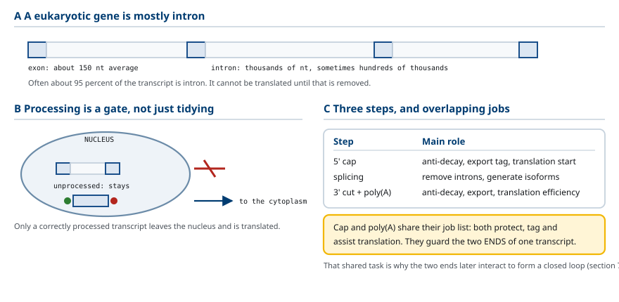
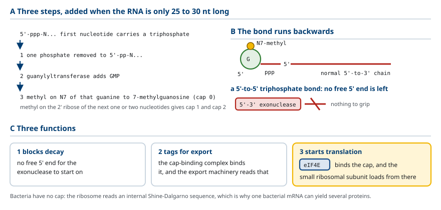
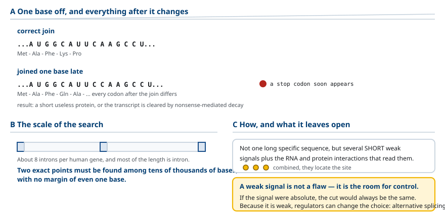
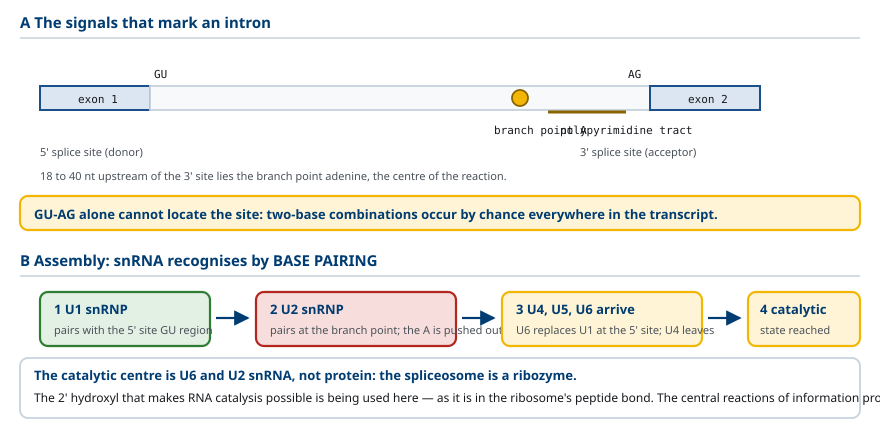
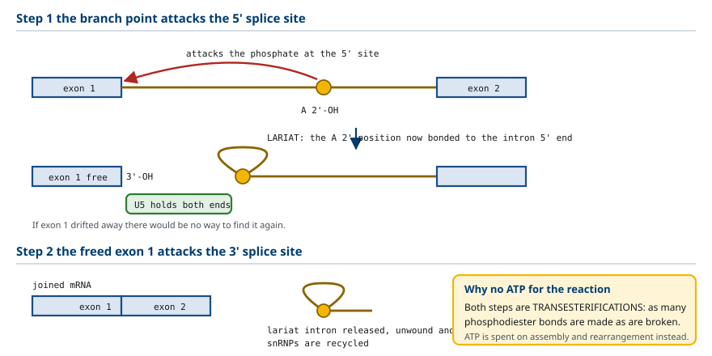
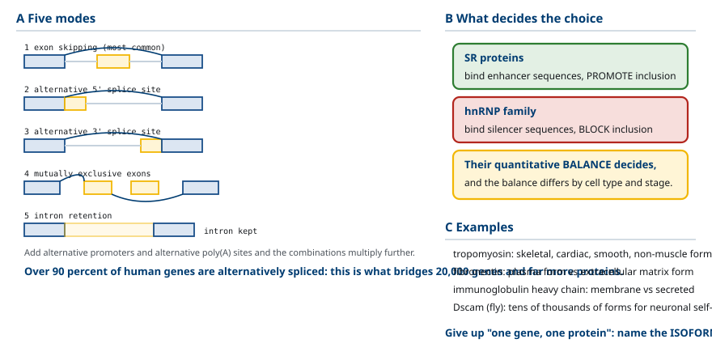
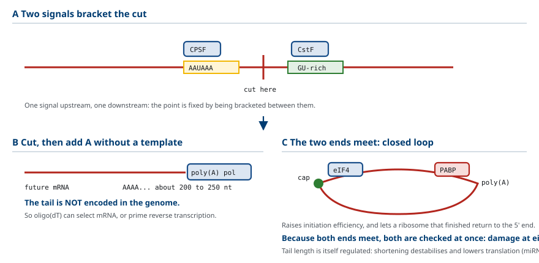
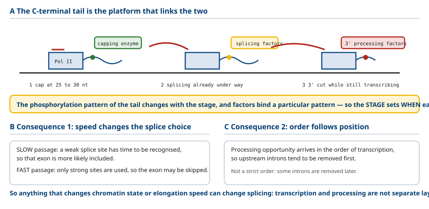
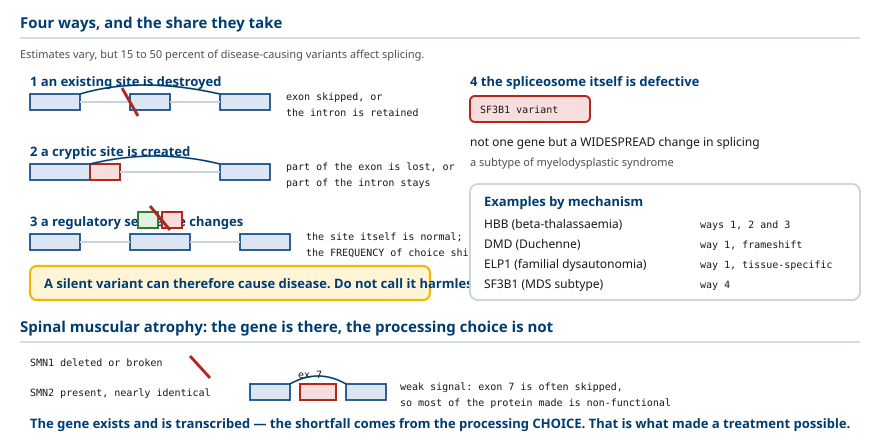
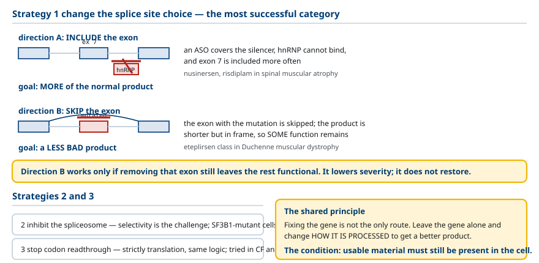

M03-W02-L03 · 분자유전학과 계통별 의학생화학특론
전사 후 가공 — capping·splicing·polyadenylation
Post-transcriptional Processing: Capping, Splicing and Polyadenylation
학습목표
- 진핵세포가 1차 전사체를 가공해야 하는 이유를 유전자의 구조와 핵의 분리로 설명한다.
- 5′ cap의 화학 구조를 쓰고 cap이 수행하는 세 가지 기능을 구분한다.
- Intron과 exon을 정의하고 splicing이 지켜야 하는 정확도 요구를 reading frame으로 설명한다.
- Splice 부위의 보존 서열 세 곳을 쓰고 spliceosome의 구성을 설명한다.
- Splicing 반응을 두 번의 ester 교환으로 서술하고 lariat 중간체가 생기는 과정을 쓴다.
- 대체 splicing의 다섯 가지 양식을 구분하고 하나의 유전자가 여러 단백질을 만드는 기전을 설명한다.
- 3′ 말단 가공을 절단과 polyadenylation으로 나누어 설명하고 poly(A) 꼬리의 기능을 쓴다.
- 가공이 전사와 동시에 일어난다는 사실의 근거와 결과를 설명한다.
- Splice 부위 변이가 질환을 만드는 네 가지 방식을 구분하고 각각의 결과를 예측한다.
- 가공을 표적으로 하는 치료 전략을 작용 지점으로 분류한다.
선수지식
- M03-W02-L02 RNA의 종류와 전사의 기전 — Pol II, 전사의 세 단계, 종결과 가공의 결합
- M01-W06-L02 유전자와 유전체의 구성 — exon과 intron, 유전자의 크기
- M03-W03-L02 유전암호와 tRNA의 역할 — reading frame, codon
강의 구성
- 1. 왜 가공이 필요한가
- 2. 5′ cap: 구조와 세 가지 기능
- 3. Splicing이 요구하는 정확도
- 4. Splice 부위의 신호와 spliceosome
- 5. Splicing 반응: 두 번의 ester 교환
- 6. 대체 splicing: 하나의 유전자에서 여러 단백질로
- 7. 3′ 말단 가공: 절단과 polyadenylation
- 8. 가공은 전사와 동시에 일어난다
- 9. 가공의 이상이 만드는 질환
- 10. 가공을 표적으로 하는 치료
1. 왜 가공이 필요한가
세균의 mRNA는 전사되는 즉시 번역에 쓰인다. 진핵세포의 mRNA는 그렇지 않다. Pol II가 만든 1차 전사체(primary transcript, pre-mRNA) 는 세 가지 가공을 거친 뒤에야 성숙한 mRNA가 된다.
5′ cap 부가, splicing, 3′ 말단 절단과 polyadenylation이다. 세 가공이 모두 필수적이며, 하나라도 실패하면 그 전사체는 분해된다.
가공이 필요한 이유를 두 가지 구조적 사실에서 찾아야 한다.
이유 1: 진핵 유전자는 조각나 있다. 단백질을 암호화하는 구간(exon) 사이에 암호화하지 않는 구간(intron)이 끼어 있다. 사람 유전자의 평균 exon 길이는 약 150 염기인데 intron은 평균 수천 염기이고 수십만 염기인 것도 있다. 전사체 전체 길이의 약 95%가 intron인 경우가 흔하다. 이 구간을 제거하지 않으면 번역이 불가능하다.
이유 2: 전사와 번역이 분리되어 있다. 전사는 핵에서, 번역은 세포질에서 일어난다. 따라서 어떤 RNA를 핵 밖으로 내보낼지 판정하는 단계가 필요하고, 가공의 완료가 그 판정 기준이 된다. 가공되지 않은 전사체는 핵을 떠나지 못한다.
두 이유를 합치면 가공의 성격이 드러난다. 가공은 단순한 손질이 아니라 품질 관리를 겸한 관문이다. 올바르게 가공된 전사체만 세포질로 나가 번역된다.
세 가공의 역할을 미리 정리하면 다음과 같다.
| 가공 | 위치 | 주된 역할 |
|---|---|---|
| 5′ cap | 전사체의 5′ 말단 | 분해 방지, 수송 표시, 번역 개시의 인식 자리 |
| Splicing | 전사체 내부 | intron 제거, 대체 splicing으로 다양성 생성 |
| 3′ 절단과 poly(A) | 전사체의 3′ 말단 | 분해 방지, 수송, 번역 효율 |
여기서 눈여겨볼 점이 있다. cap과 poly(A) 꼬리의 기능 목록이 겹친다. 둘 다 분해를 막고 수송을 돕고 번역에 관여한다. 전사체의 양 끝을 보호하고 표시하는 같은 과제를 양쪽에서 수행하는 것이며, 뒤에서 볼 두 말단의 상호작용(closed-loop 구조)이 그 협력의 결과다.

2. 5′ cap: 구조와 세 가지 기능
5′ cap은 전사체의 5′ 말단에 붙는 수식 구조이며, 전사가 시작된 직후 RNA가 약 25~30 염기일 때 이미 부가된다. 세 가공 가운데 가장 먼저 일어난다.
구조를 단계별로 보아야 한다.
1. 삼인산의 제거: 전사의 첫 뉴클레오타이드는 5′ 삼인산을 가진다. 그 가운데 하나가 제거되어 이인산이 된다. 2. GMP의 부가: Guanylyltransferase가 GMP를 붙인다. 이때 결합의 방향이 특이하다. 5′ 말단과 5′ 말단이 연결되는 5′-5′ 삼인산 결합이다. 일반적인 RNA 결합이 5′-3′인 것과 다르다. 3. Methyl기의 부가: 붙은 guanine의 7번 질소에 methyl기가 붙어 7-methylguanosine이 된다. 이것이 cap 0다. 그 아래 첫 번째와 두 번째 뉴클레오타이드의 리보스 2′ 위치에도 methyl기가 붙으면 각각 cap 1, cap 2가 된다.
5′-5′ 결합이라는 점이 기능의 근거다. 세포질의 5′→3′ exonuclease는 자유로운 5′ 말단을 인식해 분해를 시작하는데, cap이 붙으면 그런 말단이 없어진다. 방향이 거꾸로 붙어 있으므로 분해 효소가 붙잡을 자리가 사라진다.
Cap의 기능은 세 가지다.
- 분해 방지: 위에서 본 대로 5′ exonuclease의 공격을 막는다.
- 핵 밖 수송의 표시: Cap 결합 복합체(CBC)가 cap에 붙고, 이것이 수송 기구에 인식된다. Cap이 없으면 핵을 떠나지 못한다.
- 번역 개시의 인식 자리: 세포질에서 eIF4E가 cap에 결합하고, 이를 통해 ribosome의 작은 소단위가 mRNA에 올라탄다. 진핵세포의 대부분 번역이 이 cap 의존 개시로 시작된다.
세 번째 기능에서 세균과의 차이가 나온다. 세균은 cap이 없고, ribosome이 mRNA 내부의 Shine-Dalgarno 서열을 직접 인식한다. 그래서 세균의 polycistronic mRNA에서 여러 단백질이 각각 번역될 수 있다. 진핵 mRNA는 cap 하나에서 시작하므로 보통 하나의 단백질만 만든다.

3. Splicing이 요구하는 정확도
Splicing은 1차 전사체에서 intron을 제거하고 exon을 이어 붙이는 과정이다. 용어를 먼저 확정한다.
- Exon: 성숙한 mRNA에 남는 구간이다. 반드시 단백질을 암호화하는 구간이라는 뜻은 아니다. 5′ 비번역 영역과 3′ 비번역 영역도 exon에 속한다.
- Intron: 제거되는 구간이다.
Splicing에 요구되는 정확도를 분명히 해야 한다. 이어 붙이는 자리가 한 염기만 틀려도 결과가 치명적이다.
이유는 reading frame에 있다. 번역은 세 염기씩 묶어 읽으므로, exon의 경계가 한 염기 밀리면 그 뒤의 모든 codon이 달라진다(frameshift). 대개 곧 종결 codon이 나타나 짧고 기능 없는 단백질이 만들어지거나, 그 전사체가 품질 관리 경로(nonsense-mediated decay)로 분해된다.
규모를 생각하면 이 요구가 얼마나 까다로운지 보인다. 사람의 유전자 하나에 intron이 평균 8개 있고, 전사체 길이의 대부분이 intron이다. 수만 염기 가운데서 정확한 두 지점을 찾아 한 염기의 오차 없이 잘라 붙여야 한다.
이 정확도를 어떻게 달성하는가. 답은 여러 개의 약한 신호를 조합해 쓰는 것이다. 하나의 긴 특이 서열이 아니라, 짧은 보존 서열 여러 개와 그것을 인식하는 RNA·단백질의 상호작용이 겹쳐 위치를 정한다. 다음 절에서 그 신호들을 본다.
여기서 중요한 사실을 미리 짚어 둔다. Splice 부위의 신호가 약하다는 것은 결함이 아니라 조절의 여지다. 신호가 절대적이라면 언제나 같은 방식으로 잘릴 것이다. 약하기 때문에 조절 단백질이 선택을 바꿀 수 있고, 그것이 6절의 대체 splicing이다.
| 비교 항목 | DNA 복제의 정확도 | Splicing의 정확도 |
|---|---|---|
| 요구 수준 | 염기 하나의 치환도 문제 | 염기 하나의 위치 밀림도 문제 |
| 오류의 결과 | 변이가 유전체에 남는다 | 그 전사체만 무용지물이 된다 |
| 보장 수단 | 교정 exonuclease, 수선 | 여러 약한 신호의 조합 |
| 조절 가능성 | 없다 (정확해야만 한다) | 있다 (선택을 바꿀 수 있다) |

4. Splice 부위의 신호와 spliceosome
Intron의 경계를 정하는 보존 서열은 세 곳이다.
- 5′ splice 부위(donor site): intron의 시작이다. 거의 모든 intron이 GU로 시작한다.
- 3′ splice 부위(acceptor site): intron의 끝이다. 거의 모든 intron이 AG로 끝난다.
- 분기점(branch point): 3′ splice 부위에서 상류 18~40 염기에 있는 adenine 잔기다. 반응의 중심이 되는 자리다.
여기에 두 가지 보조 신호가 더해진다. 분기점과 3′ splice 부위 사이의 pyrimidine이 풍부한 구간(polypyrimidine tract), 그리고 exon과 intron 내부에 흩어진 splicing 조절 서열이다.
'GU로 시작하고 AG로 끝난다'를 GU-AG 규칙이라 부른다. 다만 이것만으로 위치가 정해지지 않는다는 점이 중요하다. GU와 AG는 두 염기 조합이므로 전사체 안에 우연히 수없이 나타난다. 실제 splice 부위의 선택에는 주변 서열, 조절 단백질의 결합, 그리고 다음에 볼 spliceosome의 조립 과정이 모두 관여한다.
Spliceosome은 splicing을 수행하는 복합체이며, 구성이 특이하다. RNA와 단백질이 함께 이룬 복합체다.
- snRNA(small nuclear RNA): U1, U2, U4, U5, U6의 다섯 가지다. 각각 단백질과 결합해 snRNP(small nuclear ribonucleoprotein) 를 이룬다.
- 그 밖에 100개 이상의 단백질이 관여한다.
Spliceosome의 핵심은 snRNA가 염기쌍으로 표적을 인식한다는 점이다.
1. U1 snRNP가 5′ splice 부위의 GU를 포함한 구간과 염기쌍을 이룬다. 2. U2 snRNP가 분기점 주변과 염기쌍을 이룬다. 이때 분기점의 adenine이 짝을 이루지 못해 밖으로 밀려나며, 이것이 다음 절 반응의 출발점이 된다. 3. U4·U5·U6가 합류하고 구조 재배열이 일어난다. U6가 U1을 대체해 5′ splice 부위에 결합하고, U4가 떨어진다. 4. 재배열이 끝난 spliceosome이 촉매 활성을 가진 상태가 된다.
여기서 중요한 결론이 나온다. 촉매 중심을 이루는 것은 단백질이 아니라 U6와 U2 snRNA다. 즉 spliceosome은 ribozyme에 해당한다. 앞 수업에서 본 'RNA의 2′ hydroxyl기가 촉매 활성의 근거가 된다'는 성질이 여기서 쓰인다. Ribosome의 peptide 결합 형성도 RNA가 촉매한다는 점과 함께, 유전정보 처리의 중심 반응들이 RNA 촉매에 의존한다는 사실이 눈에 들어온다.

5. Splicing 반응: 두 번의 ester 교환
Splicing의 화학 반응은 두 단계이며, 두 단계 모두 ester 교환(transesterification) 이다. 새로운 결합을 만드는 데 에너지를 쓰지 않고, 하나의 결합을 끊으면서 다른 결합을 만드는 교환 반응이다.
1단계: 분기점의 공격. 분기점 adenine의 2′ hydroxyl기가 5′ splice 부위의 인산을 공격한다. 그 결과 두 일이 동시에 일어난다.
- Exon 1과 intron 사이의 결합이 끊어진다. Exon 1이 유리된다.
- Adenine의 2′ 위치와 intron의 5′ 말단이 새 결합을 이룬다. Intron의 앞부분이 고리를 이루게 되며, 이 구조를 lariat(올가미) 이라 한다.
여기서 2′ hydroxyl기가 반응을 수행한다는 점이 결정적이다. DNA에는 이 기가 없으므로 이 반응이 불가능하다. 앞 수업에서 '2′ hydroxyl기가 RNA에 촉매 가능성을 준다'고 한 것의 구체적인 사례다.
2단계: Exon 1의 공격. 유리된 exon 1의 3′ hydroxyl기가 3′ splice 부위의 인산을 공격한다. 그 결과
- Exon 1과 exon 2가 이어진다.
- Lariat 형태의 intron이 떨어져 나간다. 떨어진 intron은 풀려 분해되고, snRNP는 재사용된다.
두 단계를 통틀어 보면 결합의 총수가 변하지 않는다. 끊어지는 인산diester 결합의 수와 만들어지는 수가 같다. 그래서 반응 자체에 ATP가 필요하지 않다. ATP는 spliceosome의 조립과 구조 재배열에 쓰인다.
반응의 순서에서 읽을 수 있는 설계가 있다. 1단계가 먼저 일어나므로 exon 1이 유리된 상태로 spliceosome에 붙잡혀 있어야 한다. 이 역할을 U5 snRNP가 담당한다. 두 exon의 말단을 가까이 붙잡아 2단계가 정확한 자리에서 일어나게 한다. 만약 exon 1이 풀려나간다면 다시 찾을 방법이 없다.
자기 splicing intron도 언급해 둘 만하다. 일부 intron은 spliceosome 없이 스스로 잘려 나간다. Group I intron과 group II intron이며, group II intron의 반응 기전은 spliceosome의 반응과 매우 비슷하다. 이 유사성이 spliceosome이 자기 splicing intron에서 기원했을 가능성의 근거로 제시된다.

6. 대체 splicing: 하나의 유전자에서 여러 단백질로
대체 splicing(alternative splicing) 은 같은 1차 전사체에서 서로 다른 조합의 exon을 선택해 여러 종류의 mRNA를 만드는 것이다. 사람 유전자의 90% 이상이 대체 splicing을 겪는다고 추정된다.
이 사실이 해결하는 문제가 있다. 사람의 단백질 암호화 유전자는 약 2만 개인데, 실제로 만들어지는 단백질의 종류는 그보다 훨씬 많다. 유전자 수와 단백질 종류 수의 간격을 메우는 주된 기전이 대체 splicing이다.
양식을 다섯 가지로 분류한다.
1. Exon 건너뛰기(exon skipping): 특정 exon을 포함하거나 제외한다. 가장 흔한 양식이다. 2. 대체 5′ splice 부위: 같은 exon의 끝 위치를 다르게 정한다. 3. 대체 3′ splice 부위: 같은 exon의 시작 위치를 다르게 정한다. 4. 상호 배타적 exon(mutually exclusive exons): 두 exon 가운데 하나만 선택한다. 5. Intron 유지(intron retention): intron을 제거하지 않고 남긴다.
여기에 대체 promoter 사용과 대체 poly(A) 부위 사용이 더해지면 조합의 수가 더 늘어난다.
선택을 결정하는 것은 무엇인가. 3절에서 splice 부위의 신호가 약하다고 했는데, 그 약한 신호를 조절 단백질이 보강하거나 가린다.
- SR 단백질: 주로 exon의 splicing 강화 서열에 결합해 그 exon의 포함을 촉진한다.
- hnRNP 계열: 주로 억제 서열에 결합해 포함을 방해한다.
두 계열의 양적 균형이 선택을 정한다. 그리고 그 균형이 세포 종류와 발달 단계에 따라 다르다. 그 결과 같은 유전자가 조직마다 다른 형태의 단백질을 만든다.
구체적인 사례를 보아야 한다.
- Tropomyosin: 하나의 유전자에서 골격근·심근·평활근·비근육 세포용의 서로 다른 형태가 만들어진다.
- Fibronectin: 간세포가 만드는 혈장 형태와 섬유아세포가 만드는 세포외기질 형태가 특정 exon의 포함 여부로 갈린다.
- Dscam(초파리): 대체 splicing으로 수만 가지 형태가 가능하며, 신경세포의 자기 인식에 쓰인다.
- 면역글로불린 중쇄: 막 결합형과 분비형이 3′ 쪽 처리의 차이로 갈린다. 같은 B 세포가 발달 단계에 따라 둘을 바꾼다.

7. 3′ 말단 가공: 절단과 polyadenylation
3′ 말단 가공은 두 사건으로 이루어지고, 둘이 연결되어 있다.
신호의 인식. 전사체에 두 가지 신호가 있다.
- Poly(A) 신호: AAUAAA 서열이며, 절단 지점의 상류 10~30 염기에 있다.
- GU가 풍부한 구간: 절단 지점의 하류에 있다.
두 신호 사이가 절단 지점이 된다. 신호가 두 개인 것이 위치를 정하는 방식이다. 하나는 상류, 하나는 하류에서 지점을 끼워 정한다.
절단. 인식 복합체(CPSF가 AAUAAA를, CstF가 GU 구간을 인식한다)가 결합하고, endonuclease가 두 신호 사이를 자른다. 이 시점에 전사체는 polymerase에서 분리되고 상류 조각이 장래의 mRNA가 된다.
Polyadenylation. Poly(A) polymerase가 자른 말단에 A를 이어 붙인다. 주형 없이 붙이므로 DNA에 대응하는 서열이 없다. 길이는 사람에서 약 200~250 염기다.
여기서 중요한 점이 있다. Poly(A) 꼬리는 유전체에 암호화되어 있지 않다. 유전자의 DNA 서열을 읽어도 A가 200개 이어진 구간은 없다. 이 사실이 실험적으로 쓰인다. Poly(A) 꼬리에 상보적인 oligo(dT)로 mRNA만 선택적으로 분리할 수 있고, 역전사에서 oligo(dT)를 primer로 쓸 수 있다.
Poly(A) 꼬리의 기능은 cap의 기능과 겹친다.
- 분해 방지: Poly(A) 결합 단백질(PABP)이 꼬리를 덮어 3′ exonuclease의 공격을 막는다.
- 핵 밖 수송: 수송 기구에 인식된다.
- 번역 효율: PABP가 cap에 붙은 eIF4 복합체와 상호작용해 mRNA를 고리 모양(closed loop) 으로 만든다. 이 구조가 번역 개시 효율을 높이고, 번역을 끝낸 ribosome이 다시 5′ 말단으로 돌아가기 쉽게 한다.
마지막 기능이 1절에서 예고한 양 말단의 협력이다. 두 말단이 물리적으로 만나므로, mRNA의 양쪽이 모두 온전한지가 한 번에 점검된다. 한쪽이 손상된 mRNA는 고리를 만들지 못하고 번역 효율이 떨어진다.
Poly(A) 꼬리의 길이는 조절 대상이기도 하다. 세포질에서 꼬리가 짧아지면(deadenylation) mRNA가 불안정해지고 번역이 줄어든다. 앞 수업에서 본 miRNA의 작용 가운데 하나가 deadenylation 유도였다. 반대로 난자와 초기 배아에서는 저장된 mRNA의 꼬리를 늘려 번역을 켜는 조절이 쓰인다.

8. 가공은 전사와 동시에 일어난다
가공을 전사가 끝난 뒤의 별개 공정으로 생각하면 여러 현상을 설명할 수 없다. 실제로는 가공이 전사와 동시에(co-transcriptionally) 진행된다.
근거는 다음과 같다.
- Cap은 RNA가 25~30 염기일 때 붙는다. 전사가 시작된 직후이며, 전사가 끝나기 한참 전이다.
- Splicing은 전사가 진행되는 중에 이미 일어난다. 전사 중인 전사체에 spliceosome이 붙어 있는 것이 관찰된다. 상류 intron이 하류가 전사되기 전에 제거되는 경우가 많다.
- 3′ 절단은 polymerase가 아직 전사 중일 때 일어난다. 앞 수업에서 본 Pol II 종결 기전이 그 결과다.
이 동시성을 가능하게 하는 구조적 근거가 Pol II의 C 말단 꼬리(CTD) 다. 길고 유연한 이 구조에 반복 서열이 있고, 그 인산화 양상이 전사의 단계에 따라 변한다. 가공 인자들이 특정 인산화 양상의 CTD에 결합하므로, 전사의 단계가 가공 인자의 모집 시점을 정한다.
- 개시 직후의 CTD 양상에는 capping 효소가 결합한다.
- 신장 중의 양상에는 splicing 인자가 결합한다.
- 종결 부근의 양상에는 3′ 가공 인자가 결합한다.
즉 CTD가 전사와 가공을 시간적으로 연결하는 플랫폼이다.
동시성의 결과가 두 가지 있다.
결과 1: 전사 속도가 splicing의 선택에 영향을 준다. 앞 수업에서 언급한 내용이 여기서 구체화된다. Polymerase가 느리게 지나가면 약한 splice 부위도 인식될 시간이 생겨 그 exon이 포함될 확률이 올라간다. 빠르게 지나가면 강한 부위만 쓰여 그 exon이 건너뛰어질 수 있다. 따라서 chromatin 상태나 전사 신장 속도를 바꾸는 요인이 splicing 양상을 바꿀 수 있다. 전사 조절과 가공 조절이 분리된 층위가 아니다.
결과 2: 가공의 순서가 위치에 따라 정해진다. 전사되는 순서대로 가공 기회가 오므로, 상류 intron이 먼저 제거되는 경향이 있다. 다만 엄격한 순서는 아니며 일부 intron은 나중에 제거된다.

9. 가공의 이상이 만드는 질환
Splice 부위와 관련된 변이는 사람 유전 질환의 상당 부분을 차지한다. 추정에 따라 다르지만 질환 유발 변이의 15~50% 가 splicing에 영향을 준다고 본다. 변이의 작용 방식을 네 가지로 구분해야 한다.
방식 1: 기존 splice 부위의 파괴. Intron의 GU나 AG가 변하면 그 부위가 쓰이지 못한다. 결과는 두 가지다. 다음 부위가 쓰여 exon이 건너뛰어지거나, intron이 제거되지 않고 유지된다. 둘 다 reading frame을 흔들 가능성이 크다.
방식 2: 새 splice 부위의 생성. Exon이나 intron 내부의 변이가 우연히 GU나 AG를 만들어 그 자리가 쓰이게 된다. 원래 exon의 일부가 잘려 나가거나 intron의 일부가 남는다. 이를 cryptic splice site의 활성화라 한다.
방식 3: 조절 서열의 변화. Splicing 강화 또는 억제 서열이 변해 SR 단백질이나 hnRNP의 결합이 바뀐다. Splice 부위 자체는 정상인데 선택 빈도가 달라진다. 단백질의 아미노산을 바꾸지 않는 침묵 변이(synonymous variant)도 이 방식으로 질환을 일으킬 수 있다. 침묵 변이를 무해하다고 단정할 수 없는 이유다.
방식 4: Spliceosome 자체의 결함. 4절에서 본 SF3B1 변이 같은 경우이며, 하나의 유전자가 아니라 광범위한 splicing 양상이 바뀐다.
주요 질환의 예를 방식과 함께 정리하면 다음과 같다.
| 질환 | 유전자 | 작용 방식 | 결과 |
|---|---|---|---|
| β-thalassemia의 일부 | HBB | 방식 1·2·3 모두 보고됨 | β-globin 생산 저하 |
| 척수근육위축 | SMN1 결실 + SMN2의 약한 exon 7 | 방식 3에 해당하는 상황 | 기능적 SMN 단백질 부족 |
| Duchenne 근육위축의 일부 | DMD | 방식 1 | frameshift로 기능 상실 |
| 가족성 dysautonomia | ELP1(IKBKAP) | 방식 1 (약한 부위 생성) | 조직 특이적 exon 건너뛰기 |
| 골수이형성증후군 아형 | SF3B1 | 방식 4 | 광범위한 비정상 splicing |
척수근육위축의 사례가 특히 교육적이다. 환자는 SMN1 유전자가 없거나 망가져 있는데, 거의 같은 유전자인 SMN2를 가지고 있다. 문제는 SMN2의 exon 7이 약한 splicing 신호를 가져 자주 건너뛰어진다는 것이다. 그 결과 만들어지는 단백질의 대부분이 기능이 없다. 유전자가 있는데도 가공의 선택 때문에 기능적 산물이 부족한 상태다.

10. 가공을 표적으로 하는 치료
가공이 치료 표적이 되는 방식은 세 가지로 분류된다. 앞 수업에서 본 RNA 치료의 분류와 겹치지만, 여기서는 가공의 어느 단계에 작용하는지를 기준으로 정리한다.
전략 1: Splice 부위의 선택을 바꾼다. 가장 성공적인 범주다.
- Exon을 포함시키는 방향: Nusinersen과 risdiplam이 SMN2의 exon 7 포함을 늘린다. 부족한 기능을 회복시키는 것이 목표다.
- Exon을 건너뛰게 하는 방향: Duchenne 근육위축에서 eteplirsen 계열이 변이를 포함한 exon을 건너뛰게 한다. 짧지만 reading frame이 맞는 단백질이 만들어져 기능이 일부 남는다. 완전한 회복이 아니라 중증도를 낮추는 전략이다.
두 방향의 차이에 주의해야 한다. 전자는 정상 산물을 늘리는 것이고, 후자는 덜 나쁜 산물로 바꾸는 것이다. 후자가 성립하는 조건은 그 exon을 빼도 나머지가 기능을 유지한다는 점이다.
전략 2: Spliceosome을 억제한다. Spliceosome의 구성 요소를 표적으로 하는 저분자 화합물이 연구되고 있다. 광범위하게 작용하므로 선택성이 과제이지만, SF3B1 변이가 있는 암세포가 splicing 억제에 더 취약하다는 점을 이용하는 접근이 시도된다.
전략 3: 종결 codon을 건너뛰게 한다. 엄밀히는 가공이 아니라 번역의 조절이지만 같은 논리를 쓴다. 조기 종결 codon이 있는 경우 ribosome이 그것을 읽고 지나가게 해 전장 단백질을 만들게 한다(readthrough). Cystic fibrosis와 Duchenne 근육위축에서 시도되었다.
이 치료들이 공통으로 보여 주는 원리를 정리해야 한다.
이 수업에서 세운 가공의 기전은 다음 수업으로 이어진다. 가공에 실패한 전사체가 어떻게 걸러지는지, mRNA의 안정성이 어떻게 조절되는지가 다음 수업의 주제다.

확인 문항
진핵 전사체가 가공을 거쳐야 하는 두 가지 구조적 이유를 쓰고, 그것을 합치면 가공의 성격이 무엇이 되는지 설명하시오.
해설
첫째, 진핵 유전자는 조각나 있어 exon 사이에 intron이 끼어 있고 전사체 길이의 약 95%가 intron인 경우가 흔하므로 이 구간을 제거해야 번역이 가능하다. 둘째, 전사는 핵에서 번역은 세포질에서 일어나므로 어떤 RNA를 핵 밖으로 내보낼지 판정하는 단계가 필요하다. 두 이유를 합치면 가공은 단순한 손질이 아니라 품질 관리를 겸한 관문이 된다. 올바르게 가공된 전사체만 세포질로 나가 번역된다.
5' cap의 결합이 일반적인 RNA 결합과 어떻게 다른지 쓰고, 그 차이가 기능의 근거가 되는 이유를 설명하시오.
해설
일반적인 RNA 결합은 5'와 3'를 잇는 반면, cap은 전사체의 5' 말단과 붙는 GMP의 5' 말단이 연결되는 5'-5' 삼인산 결합이다. 세포질의 5'에서 3' 방향 exonuclease는 자유로운 5' 말단을 인식해 분해를 시작하는데, cap이 거꾸로 붙어 있으므로 그런 말단이 없어지고 분해 효소가 붙잡을 자리가 사라진다.
Splicing에 요구되는 정확도가 왜 그렇게 높은지 reading frame으로 설명하고, 그 정확도를 달성하는 방식과 그 방식이 남기는 여지를 쓰시오.
해설
번역은 세 염기씩 묶어 읽으므로 exon 경계가 한 염기 밀리면 그 뒤의 모든 codon이 달라지고(frameshift) 대개 곧 종결 codon이 나타나 짧고 기능 없는 단백질이 만들어지거나 전사체가 품질 관리 경로로 분해된다. 정확도는 하나의 긴 특이 서열이 아니라 짧은 보존 서열 여러 개와 그것을 인식하는 RNA·단백질 상호작용의 조합으로 달성한다. 신호가 약하다는 것은 결함이 아니라 조절의 여지다. 절대적이라면 언제나 같게 잘리겠지만, 약하기 때문에 조절 단백질이 선택을 바꿀 수 있고 그것이 대체 splicing이다.
Splice 부위의 보존 서열 세 곳을 쓰고, GU-AG 규칙만으로 위치가 정해지지 않는 이유를 설명하시오.
해설
Intron의 시작인 5' splice 부위의 GU, intron의 끝인 3' splice 부위의 AG, 그리고 3' 부위에서 상류 18에서 40 염기에 있는 분기점 adenine이다. GU와 AG는 두 염기 조합이므로 전사체 안에 우연히 수없이 나타난다. 실제 선택에는 polypyrimidine 구간과 splicing 조절 서열, 조절 단백질의 결합, spliceosome의 조립 과정이 모두 관여한다.
Spliceosome의 촉매 중심이 무엇인지 쓰고, 그 사실이 앞 수업의 어떤 성질과 연결되는지 설명하시오.
해설
촉매 중심을 이루는 것은 단백질이 아니라 U6와 U2 snRNA이므로 spliceosome은 ribozyme에 해당한다. 이는 RNA의 2' hydroxyl기가 반응에 참여할 수 있어 촉매 활성의 근거가 된다는 성질과 연결된다. Ribosome의 peptide 결합 형성도 RNA가 촉매하므로, 유전정보 처리의 중심 반응들이 RNA 촉매에 의존한다는 사실이 함께 드러난다.
Splicing 반응의 두 단계를 공격하는 기와 생성물로 서술하고, 반응에 ATP가 필요하지 않은 이유를 설명하시오.
해설
1단계에서 분기점 adenine의 2' hydroxyl기가 5' splice 부위의 인산을 공격해 exon 1이 유리되고 intron의 앞부분이 고리를 이룬 lariat이 생긴다. 2단계에서 유리된 exon 1의 3' hydroxyl기가 3' splice 부위의 인산을 공격해 두 exon이 이어지고 lariat 형태의 intron이 떨어진다. 두 단계 모두 ester 교환이어서 끊어지는 인산diester 결합의 수와 만들어지는 수가 같으므로 반응 자체에 ATP가 필요하지 않다. ATP는 spliceosome의 조립과 구조 재배열에 쓰인다.
대체 splicing의 다섯 가지 양식을 쓰고, 선택을 결정하는 두 단백질 계열과 그 균형의 의미를 설명하시오.
해설
Exon 건너뛰기, 대체 5' splice 부위, 대체 3' splice 부위, 상호 배타적 exon, intron 유지다. 선택은 SR 단백질이 주로 exon의 강화 서열에 결합해 포함을 촉진하고 hnRNP 계열이 주로 억제 서열에 결합해 포함을 방해하는 두 계열의 양적 균형이 정한다. 그 균형이 세포 종류와 발달 단계에 따라 다르므로 같은 유전자가 조직마다 다른 형태의 단백질을 만든다.
Poly(A) 꼬리가 유전체에 암호화되어 있지 않다는 사실이 실험에서 어떻게 쓰이는지 쓰고, 꼬리의 세 가지 기능을 설명하시오.
해설
유전자 DNA에는 A가 200개 이어진 구간이 없으며 poly(A) polymerase가 주형 없이 붙인다. 이 성질을 이용해 꼬리에 상보적인 oligo(dT)로 mRNA만 선택 분리하거나 역전사의 primer로 쓸 수 있다. 기능은 PABP가 꼬리를 덮어 3' exonuclease의 공격을 막는 분해 방지, 수송 기구에 인식되는 핵 밖 수송, 그리고 PABP가 cap의 eIF4 복합체와 상호작용해 mRNA를 고리 모양으로 만들어 번역 개시 효율을 높이는 것이다.
가공이 전사와 동시에 일어난다는 근거를 세 가지 쓰고, 그것을 가능하게 하는 구조적 근거를 설명하시오.
해설
Cap은 RNA가 25에서 30 염기일 때 이미 붙고, splicing은 전사 중인 전사체에 spliceosome이 붙어 진행되며, 3' 절단은 polymerase가 아직 전사 중일 때 일어난다. 구조적 근거는 Pol II의 C 말단 꼬리다. 길고 유연한 이 구조의 인산화 양상이 전사 단계에 따라 변하고, 가공 인자들이 특정 인산화 양상에 결합하므로 전사의 단계가 가공 인자의 모집 시점을 정한다. 즉 C 말단 꼬리가 전사와 가공을 시간적으로 연결하는 플랫폼이다.
전사 속도가 splicing의 선택에 영향을 주는 기전을 설명하고, 그 사실이 조절 층위에 대해 무엇을 뜻하는지 쓰시오.
해설
Polymerase가 느리게 지나가면 약한 splice 부위도 인식될 시간이 생겨 그 exon이 포함될 확률이 올라가고, 빠르게 지나가면 강한 부위만 쓰여 그 exon이 건너뛰어질 수 있다. 따라서 chromatin 상태나 전사 신장 속도를 바꾸는 요인이 splicing 양상을 바꿀 수 있으며, 전사 조절과 가공 조절이 분리된 층위가 아니라는 뜻이다.
척수근육위축에서 nusinersen이 작동하는 기전을 설명하고, 이 전략이 성립하는 조건을 쓰시오.
해설
환자는 SMN1이 없거나 망가졌지만 거의 같은 유전자인 SMN2를 가지고 있는데, SMN2의 exon 7이 약한 splicing 신호를 가져 자주 건너뛰어지므로 만들어지는 단백질의 대부분이 기능이 없다. Nusinersen은 SMN2의 intron 7에 있는 억제 서열에 붙어 hnRNP의 결합을 막아 exon 7이 포함될 확률을 올리고 기능적 SMN 단백질을 더 만들게 한다. 이 전략이 성립하는 조건은 쓸 수 있는 재료가 세포 안에 남아 있다는 것이다. SMN2 유전자가 존재하고 전사되고 있었기 때문에 가공의 선택만 바꾸어 결과를 얻을 수 있었다.
참고문헌
- Ferrier DR. Lippincott Illustrated Reviews: Biochemistry. 8th ed. Wolters Kluwer; 2023. Chapter 31.
- Cooper GM. The Cell: A Molecular Approach. 9th ed. Oxford University Press; 2022. Chapter 6.
- Alberts B, Heald R, Johnson A, et al. Molecular Biology of the Cell. 7th ed. W. W. Norton; 2022. Chapter 6.
- Wilkinson ME, Charenton C, Nagai K. RNA splicing by the spliceosome. Annu Rev Biochem. 2020;89:359–388.
- Ule J, Blencowe BJ. Alternative splicing regulatory networks: functions, mechanisms, and evolution. Mol Cell. 2019;76(2):329–345.
- Scotti MM, Swanson MS. RNA mis-splicing in disease. Nat Rev Genet. 2016;17(1):19–32.
- Finkel RS, Mercuri E, Darras BT, et al. Nusinersen versus sham control in infantile-onset spinal muscular atrophy. N Engl J Med. 2017;377(18):1723–1732.